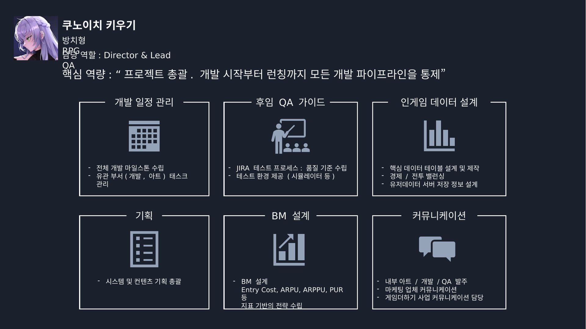
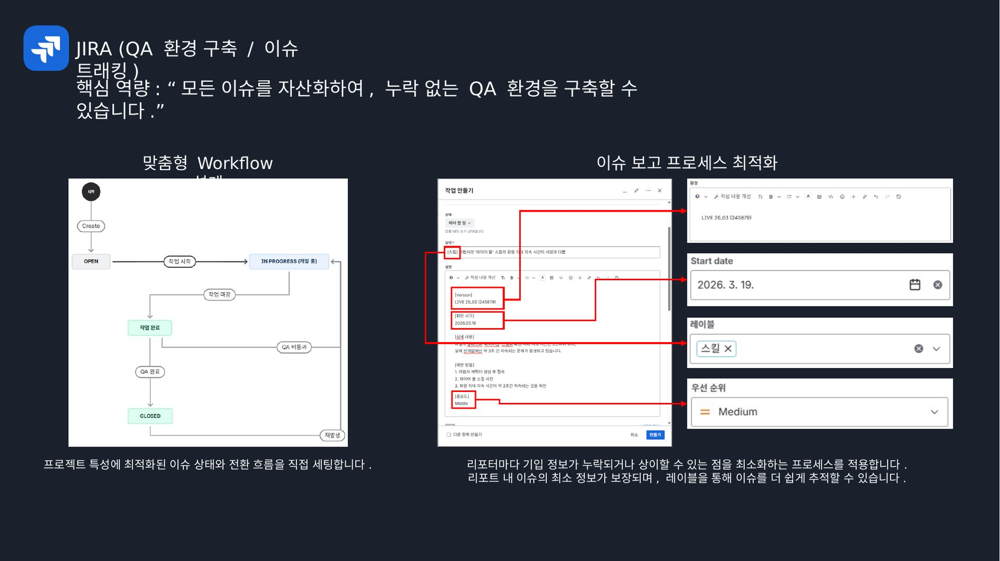
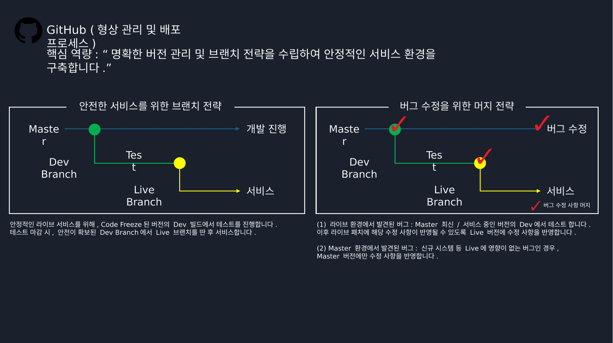
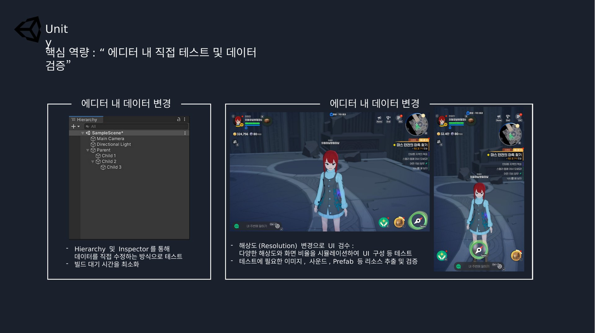
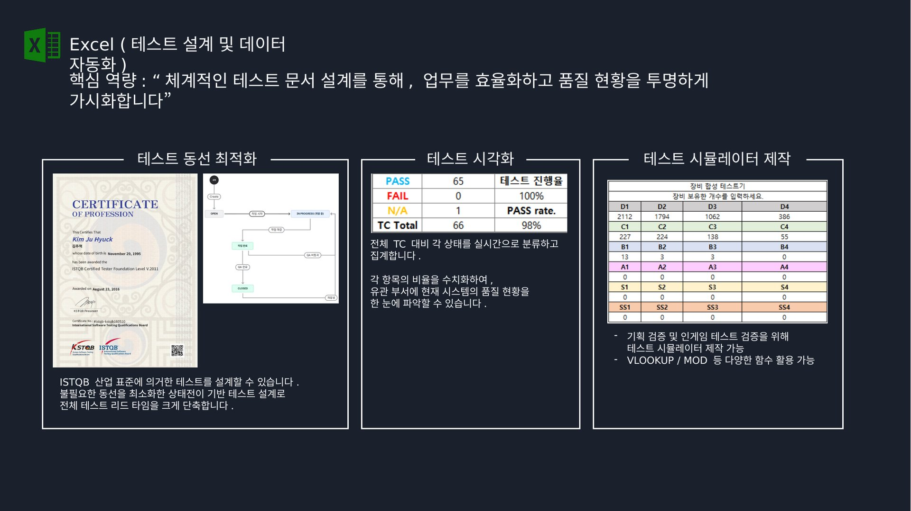
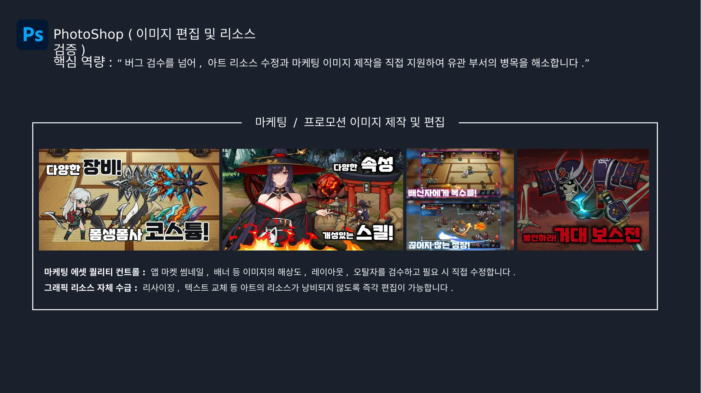
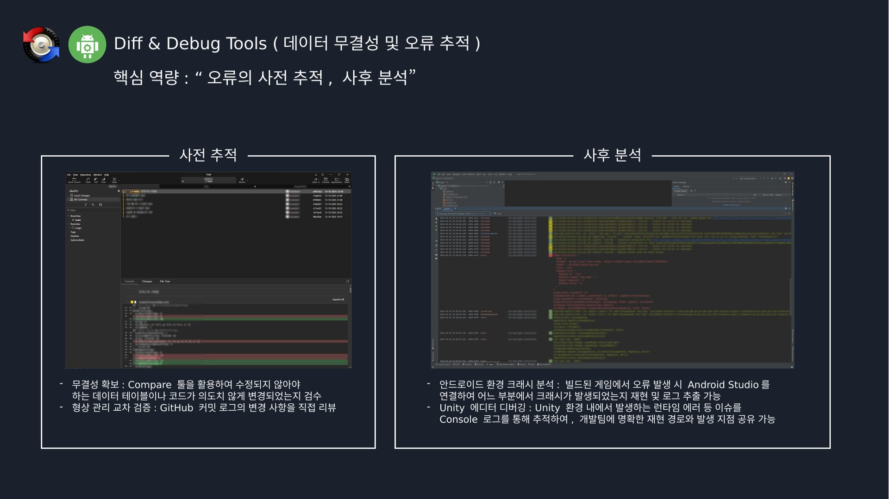
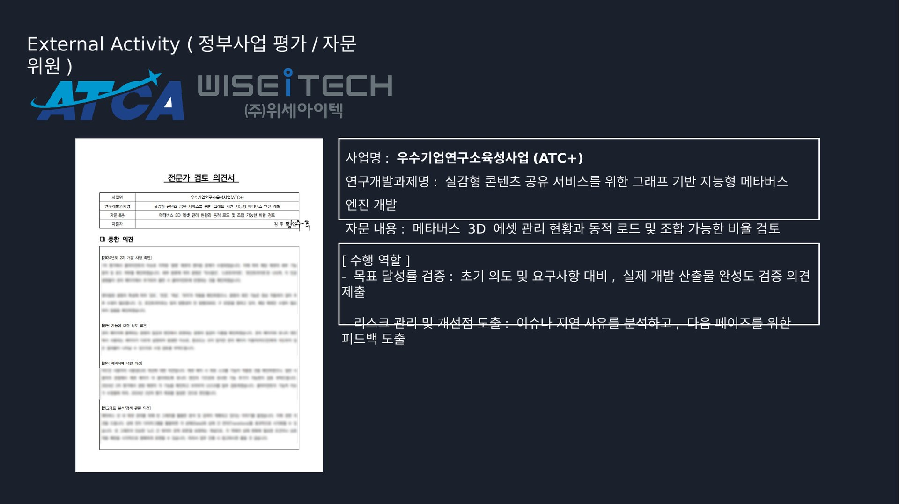

쿠노이치 키우기 (방치형 RPG)
Director & Lead QA · 2025.02 ~ 2025.11
프로젝트 총괄. 개발 시작부터 런칭까지 모든 개발 파이프라인을 통제했습니다.

핵심 스킬, 대표 프로젝트, 대외활동, 역량 및 자격
"모든 이슈를 자산화하여, 누락 없는 QA 환경을 구축할 수 있습니다."

"명확한 버전 관리 및 브랜치 전략을 수립하여 안정적인 서비스 환경을 구축합니다."

"에디터 내 직접 테스트 및 데이터 검증"

"체계적인 테스트 문서 설계를 통해, 업무를 효율화하고 품질 현황을 투명하게 가시화합니다."

"버그 검수를 넘어, 아트 리소스 수정과 마케팅 이미지 제작을 직접 지원하여 유관 부서의 병목을 해소합니다."

"오류의 사전 추적, 사후 분석"

Director & Lead QA · 2025.02 ~ 2025.11
프로젝트 총괄. 개발 시작부터 런칭까지 모든 개발 파이프라인을 통제했습니다.


DWGames 방치형 RPG 중 1개 프로젝트의 테스트 케이스 문서를 준비 중입니다. NDA 검토 및 민감정보 제거 후 업로드 예정입니다.
준비 중 — 문서가 확정되면 이 자리에 "문서 보기 / 다운로드" 버튼이 표시됩니다
QA/협업 툴
버전관리
엔진
테스트 도구
디자인 툴